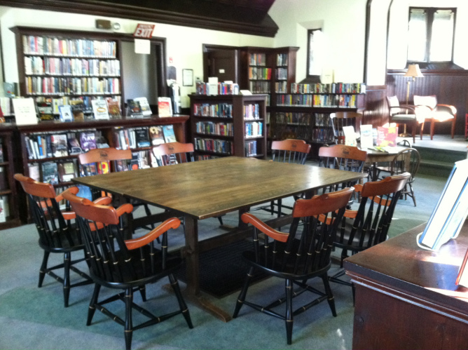

Friends of the Benton
The Everett C. Benton Library is run by volunteers and supported entirely by donations. We get no financial support from the Town of Belmont or the Commonwealth of Massachusetts.
Please join our efforts to preserve this important and historic community resource. Your donation will be used to help with operating costs, such as buying books and paying utility bills. It will also be used toward care and maintenance of this historic building.
The Friends of the Benton Library is a 501(c)(3) non-profit organization; your contribution is tax deductible. Please make checks payable to:
Friends of the Benton Library
P.O. Box 425
Belmont, MA 02478
Book Donations
The Benton welcomes donations of books in good condition. Duplicates and other books for which we don't have space may be sold, with the proceeds to benefit the library. To contribute books, please bring them to the building during open hours. If you would like a letter that can be used as a receipt for tax purposes, please leave your name and contact information.